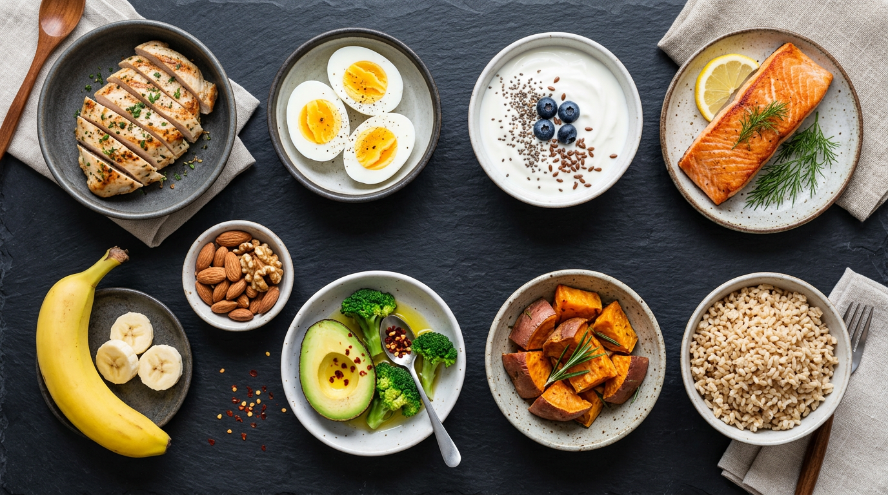

10 × weight(kg) + 6.25 × height(cm) − 5 × age + 510 × weight(kg) + 6.25 × height(cm) − 5 × age − 161
| Food | Serving | Protein | Calories | Cal / g Protein |
|---|---|---|---|---|
| Tuna (canned, water) | 1 can (5 oz) | 30g | 120 | 4.0 |
| Chicken Breast | 6 oz cooked | 42g | 187 | 4.5 |
| Shrimp | 6 oz cooked | 36g | 170 | 4.7 |
| Turkey Breast | 6 oz cooked | 38g | 180 | 4.7 |
| Egg Whites | 1 cup (243g) | 26g | 126 | 4.8 |
| Whey Protein | 1 scoop (~32g) | 25g | 120 | 4.8 |
| Greek Yogurt (0% fat) | 1 cup (227g) | 20g | 100 | 5.0 |
| Cottage Cheese (1% fat) | 1 cup (226g) | 28g | 163 | 5.8 |
| Food | Serving | Carbs | Cal | Fiber |
|---|---|---|---|---|
| White Rice | 1 cup cooked | 45g | 206 | 0.6g |
| Brown Rice | 1 cup cooked | 45g | 216 | 3.5g |
| Oats (rolled) | 1/2 cup dry | 27g | 150 | 4g |
| Sweet Potato | 1 medium (130g) | 27g | 112 | 4g |
| Banana | 1 medium | 27g | 105 | 3g |
| Quinoa | 1 cup cooked | 39g | 222 | 5g |
| Whole Wheat Bread | 2 slices | 24g | 140 | 4g |
| Food | Serving | Fat | Cal | Type |
|---|---|---|---|---|
| Avocado | 1/2 medium | 15g | 160 | Mono |
| Olive Oil | 1 tbsp | 14g | 119 | Mono |
| Almonds | 1 oz (23 nuts) | 14g | 164 | Mono |
| Peanut Butter | 2 tbsp | 16g | 190 | Mono |
| Salmon | 6 oz cooked | 18g | 311 | Omega-3 |
| Chia Seeds | 2 tbsp | 9g | 138 | Omega-3 |
| Walnuts | 1 oz (14 halves) | 18g | 185 | Omega-3 |